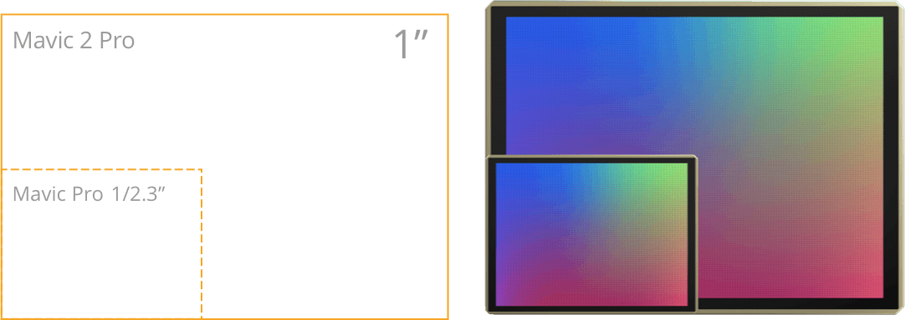
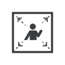

Get ready to see the bigger picture.
Mavic 2 Pro
Hasselblad Camera
Mavic 2 Zoom
2x Optical Zoom Camera
10 km 1080p
Video Transmission 1
31-min Max. Flight Time 2
Omnidirectional Obstacle Sensing 3
Hyperlapse


Hasselblad L1D-20c Camera Iconic Image Quality
20 MP 1” CMOS Sensor
Adjustable Aperture, f/2.8 – f/11
10-bit Dlog-M
10-bit HDR Video
24-48 mm Optical Zoom Camera
Ultimate Flexibility
12 MP 1/2.3” CMOS Sensor
48 MP Super Resolution Photo
4x Lossless Zoom FHD Video
Dolly Zoom
Mavic 2 Pro with
Hasselblad Camera
Made in Sweden, Hasselblad cameras are renowned for their iconic ergonomic design, uncompromising image quality, and Swedish craftsmanship. Since 1941, Hasselblad cameras have captured some of the world’s most iconic images – including the first moon landing.
Co-engineered in partnership with Hasselblad after two years of tireless research, the Mavic 2 Pro comes equipped with the all-new Hasselblad L1D-20c camera. The L1D-20c possesses Hasselblad’s unique Hasselblad Natural Colour Solution (HNCS) technology, 5 helping users to capture gorgeous 20-megapixel aerial shots in stunning color detail.
Learn More1-inch CMOS Sensor
The brand new 1-inch CMOS sensor has an active sensing area four times more effective than the original Mavic Pro. The large sensor also means better performance in low-light environments with a more extensive ISO range, max ISO lifted from 3200 to 12800.
10-bit Dlog-M Color Profile
The Mavic 2 Pro supports a 10-bit Dlog-M color profile that yields higher dynamic range for more flexibility in the grading room. The system records over 1 billion colors (compared to the 16 million colors from traditional 8-bit color coding technologies) and retains more in-depth details in both highlights and shadows. Now you can capture the subtlest gradations at sunset or sunrise, leaving greater space for post-production.
HDR Video
With 4K 10-bit HDR support, the Mavic 2 Pro can be plugged into a 4K TV with HLG and will immediately play back footage with the right color tones. The brighter highlights and increased contrast are what make HDR video so appealing.
Adjustable Aperture
The f/2.8-f/11 adjustable aperture delivers outstanding image quality both in high and low-light environments. When shooting in low light, set the aperture to f/2.8 to allow more light in and to capture bright and clear photos. When shooting in well-lit environments, set the aperture to f/11 to lower the shutter speed and make your videos smoother.
Shot on Mavic 2 Pro
24-48 mm Optical Zoom Camera
Ultimate Flexibility
12 MP 1/2.3” CMOS Sensor
48 MP Super Resolution Photo
4x Lossless Zoom FHD Video
Dolly Zoom
Mavic 2 Pro with
Hasselblad Camera
Made in Sweden, Hasselblad cameras are renowned for their iconic ergonomic design, uncompromising image quality, and Swedish craftsmanship. Since 1941, Hasselblad cameras have captured some of the world’s most iconic images – including the first moon landing.
Co-engineered in partnership with Hasselblad after two years of tireless research, the Mavic 2 Pro comes equipped with the all-new Hasselblad L1D-20c camera. The L1D-20c possesses Hasselblad’s unique Hasselblad Natural Colour Solution (HNCS) technology, 5 helping users to capture gorgeous 20-megapixel aerial shots in stunning color detail.
Learn More1-inch CMOS Sensor
The brand new 1-inch CMOS sensor has an active sensing area four times more effective than the original Mavic Pro. The large sensor also means better performance in low-light environments with a more extensive ISO range, max ISO lifted from 3200 to 12800.
10-bit Dlog-M Color Profile
The Mavic 2 Pro supports a 10-bit Dlog-M color profile that yields higher dynamic range for more flexibility in the grading room. The system records over 1 billion colors (compared to the 16 million colors from traditional 8-bit color coding technologies) and retains more in-depth details in both highlights and shadows. Now you can capture the subtlest gradations at sunset or sunrise, leaving greater space for post-production.
HDR Video
With 4K 10-bit HDR support, the Mavic 2 Pro can be plugged into a 4K TV with HLG and will immediately play back footage with the right color tones. The brighter highlights and increased contrast are what make HDR video so appealing.
Adjustable Aperture
The f/2.8-f/11 adjustable aperture delivers outstanding image quality both in high and low-light environments. When shooting in low light, set the aperture to f/2.8 to allow more light in and to capture bright and clear photos. When shooting in well-lit environments, set the aperture to f/11 to lower the shutter speed and make your videos smoother.
Hasselblad L1D-20c Camera Iconic Image Quality
20 MP 1” CMOS Sensor
Adjustable Aperture, f/2.8 – f/11
10-bit Dlog-M
10-bit HDR Video
Camera System
Shoot Like a Pro
Both Mavic 2 cameras employ DJI's latest 3-axis gimbal technology, 6 ensuring smooth, stable footage in just about any situation.
Hyperlapse
Say goodbye to complicated post-processing. With Hyperlapse, the aircraft shoots stable aerial shots and processes them automatically, enabling you to create professional-looking timelapses with a simple tap of a button, which you can share to social media immediately. Save a flight path in Task Library to fly the Mavic 2 through the path whenever you feel like it. JPEG and RAW photos can be simultaneously saved on a microSD card, leaving more room for post editing.
- Free
- Circle
- CourseLock
- WayPoint
Enhanced HDR Photos
The Mavic 2 also supports enhanced HDR photos, an improved technique that blends a sequence of photos for ghost-free high dynamic range, offering increased image clarity while avoiding unwanted artificial effects.
HyperLight
Brighten up your world with HyperLight, a low-light setting designed to enhance your images while reducing noise significantly.
Normal Mode
HyperLight
OcuSync 2.0 Video Transmission System
Signature Technologies
OcuSync 2.0 video transmission performance is greatly enhanced with improvements made to communication distance, video quality and anti-interference, offering you unprecedented control.
Soar Above and See More Clearly
The all-new OcuSync 2.0 provides a 1080p video transmission signal up to an astonishing ten kilometers1 away, allowing you to fly further without constraints. Edit and upload Full High Definition (FHD) resolution footage directly to social media from the cache. Original images shot during flight can be automatically saved to your mobile device without the need to download it from the aircraft manually.
2.4 to 5.8 GHz Real-Time Auto-Switching
The all-new OcuSync 2.0 provides a 1080p video transmission signal up to an astonishing ten kilometers1 away, allowing you to fly further without constraints. Edit and upload Full High Definition (FHD) resolution footage directly to social media from the cache. Original images shot during flight can be automatically saved to your mobile device without the need to download it from the aircraft manually.
Fast Downloading, Low-Latency
The all-new OcuSync 2.0 provides a 1080p video transmission signal up to an astonishing ten kilometers1 away, allowing you to fly further without constraints. Edit and upload Full High Definition (FHD) resolution footage directly to social media from the cache. Original images shot during flight can be automatically saved to your mobile device without the need to download it from the aircraft manually.
Flight Safety
Powerful, Yet Safe
After countless hours of research and testing, the Mavic 2 has been optimally redesigned to increase propulsion, lower power consumption, and reduce noise. These subtle yet powerful improvements, along with an improved FlightAutonomy system, offer a smoother, quieter flight for greater discretion and safety.
Faster
72 kph Max. Speed 10
The rebuilt aircraft body presents better aerodynamic performance. The body drag of the Mavic 2 is 19% less than that of the Mavic Pro when flying at full speed.

Longer
72 kph Max. Speed 10
The rebuilt aircraft body presents better aerodynamic performance. The body drag of the Mavic 2 is 19% less than that of the Mavic Pro when flying at full speed.
Quieter
72 kph Max. Speed 10
The rebuilt aircraft body presents better aerodynamic performance. The body drag of the Mavic 2 is 19% less than that of the Mavic Pro when flying at full speed.
Downward
The dual vision system allows for a precision measurement range of up to 11 meters. The detectable range is 11-22 meters. The infrared sensing system allows for a precision measurement range of up to 8 meters. The aircraft hovers accurately at 50 meters and lands safely by detecting land. The addition of the Bottom Auxiliary Light assists the downward sensors in low-light conditions.
- Omnidirectional Obstacle Sensing
- Forward
- Downward
- Left and Right
- Backward
- Upward
- APAS
Intelligent
Easy to Use
With powerful cameras and easy-to-use intelligent shooting modes, the Mavic 2 makes creative aerial photography more accessible to users at all levels.
- ActiveTrack 2.0
- QuickShots
- Panoramas
Panoramas
The Mavic 2 supports four panorama modes including Sphere, 180°, Horizontal, and Vertical.
- POI 2.0
- Waypoint 2.0 7
- Dolly Zoom 12
- Asteroid13
- Boomerang
Accessories
Powerful accessories to unlock your creativity.
DJI Smart Controller
The DJI Smart Controller comes with an ultra-bright 5.5-inch 1080p display that maintains clear visibility and vivid color even in direct sunlight. The installation of third-party apps is supported, and an optimized version of the DJI GO 4 app comes pre-installed along with the new SkyTalk feature for livestreaming flights. Easily transfer your aerial photos and videos from the DJI Smart Controller to your mobile device using the DJI GO 4 app’s new Go Share function. With intuitive controls and easy set-up, users can get in the air fast and never miss a moment of the action.
Learn More- Twice as bright as conventional smart devices at 1000 cd/m2
- HDMI port and microSD card slot
- Go Share function
- -20 to 40℃ operating temperature
Standard Remote Controller
The standard remote controller offers up to 135 minutes of battery life on a full charge. It features an ergonomic and foldable design with detachable sticks, making it convenient to carry and store. The new design works better with mainstream smartphones, which gives you a better operational experience.
DJI Goggles Series
The DJI Goggles series 14 connects with the Mavic 2 wirelessly via OcuSync. Users can now enjoy an enhanced experience with lower latency and a clearer 1080p video transmission range of up to 8 km. 1 In Head Tracking mode, the gimbal (yaw) control range is up to -75° to +75°, offering users a more immersive FPV flight experience.
Notes:
- 1. Aircraft takeoff weight includes battery, propellers, and a microSD card. Check all applicable rules and regulations before use and always fly safely near others.
- 2. Measured at a constant speed of 14 kph in windless conditions.
- 3. 4 km for FCC compliant Model (MT1SS5) and 2 km for CE compliant Model (MT1SD25). Measurements were taken in unobstructed environments free of interference. Always fly your drone within visual line of sight unless otherwise permitted.
- 4. Vision positioning requires non-reflective, discernable surfaces, and adequate lighting. Available at altitudes from 0.5-30 m. The vertical and horizontal positioning accuracy is within±0.1 m.
- 5. The Fly More Combo includes the 360° Propeller Guard. To ensure safety, please avoid any contact between the aircraft and yourself or others when the aircraft is powered on.
- 6. The Fly Spots feature is currently only available in Mainland China. All flight locations displayed by the Fly Spots feature are based on voluntarily-shared location tags from SkyPixel users. DJI never collects or shares user data without user consent. Always check and follow the applicable rules wherever you fly.
- 7. The Fly More Combo includes the Two-Way Charging Hub.
- 8. Accessories are provided by a third-party supplier and must be purchased separately.
- 9. Accessories must be under 30 grams. Make sure the Snap Adapter and connected devices are properly attached before takeoff.
- 249 g Ultralight
- 30-min Max. Flight Time
- 4 km HD Video Transmission
- Vision Sensor + GPS Precise Hover
- 3-Axis Gimbal 2.7K Camera
- Simplified Recording & Editing
Fly As You Are
From USD $399
Buy NowPrices on the official website are for reference only. Visit the DJI Online Store to see the most up-to-date prices.

Copyright © 2020 Lorem All Rights Reserved.